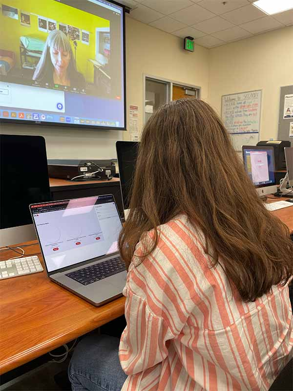

Usability Testing Results

Observations that emerged through testing:
- The CTA stood out the most.
- View posts opens an array of view-post modules and does not link to the specific post that was opened.
- The overall design is professional and follows common UI/UX practices that are intuitive to users familiar with the web.
- The create a post form is too small/doesn’t carry enough visual weight in desktop. Styling it in addition to rethinking its layout could help resolve this.
Plans to reiterate based upon feedback:
I will be keeping the CTA and general layout as is since these elements were reported by both users to be intuitive and clear. I will be working on fixing the view posts tool so that it populates the object with data that corresponds to the post that was clicked and only shows one set of data at a time, rather than populating with multiple objects like it does now. I will also be styling and re-working the create a post tool for desktop to make it more engaging.